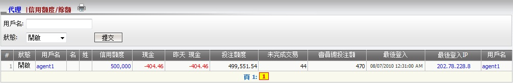
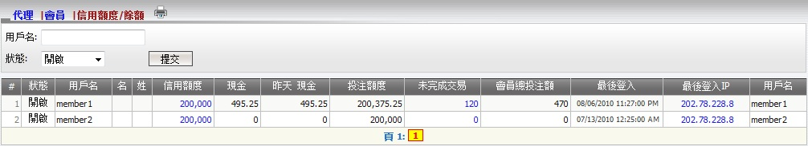

信用額度/餘額
定義:
這個功能顯示所有代理/會員的信用額度及餘額的必要信息, 例如:
- 狀態: 開啟, 關閉, 暫停 或 禁用。
- 信用額度: 總代理給予的代理總信用額度。
- 現金: 截止現在的代理輸贏總額包括轉賬數額。
- 昨日現金: 截至昨日的代理輸贏總額包括轉賬數額。
- 投注額度: 代理可給予他/她的會員的可用信用額度。
- 未完成交易: 代理的總收入數額從會員仍在進行中的注單。
- 會員總投注交易: 仍在進行中和已結算注單的總投注額。
此外, 系統也允許總代理點擊信用額度數額以更新代理信用額度:

圖 1.1
要查看所有關於會員信用額度及現金的相關信息, 點擊代理用戶名 (圖1.2). 此外, 總代理也被允許:

圖 1.2